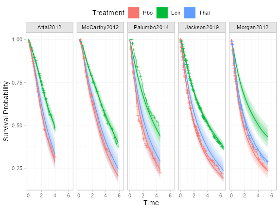

library(multinma)
#> For execution on a local, multicore CPU with excess RAM we recommend calling
#> options(mc.cores = parallel::detectCores())
#>
#> Attaching package: 'multinma'
#> The following objects are masked from 'package:stats':
#>
#> dgamma, pgamma, qgamma
library(survival)
library(dplyr)
#>
#> Attaching package: 'dplyr'
#> The following objects are masked from 'package:stats':
#>
#> filter, lag
#> The following objects are masked from 'package:base':
#>
#> intersect, setdiff, setequal, union
library(ggplot2)
library(loo)
#> This is loo version 2.6.0
#> - Online documentation and vignettes at mc-stan.org/loo
#> - As of v2.0.0 loo defaults to 1 core but we recommend using as many as possible. Use the 'cores' argument or set options(mc.cores = NUM_CORES) for an entire session.
#> - Windows 10 users: loo may be very slow if 'mc.cores' is set in your .Rprofile file (see https://github.com/stan-dev/loo/issues/94).
options(mc.cores = parallel::detectCores())Leahy and Walsh (2019) present a network of five trials
comparing lenalidomide and thalidomide to placebo for newly diagnosed
multiple myeloma (NDMM) after autologous stem cell transplant (ASCT).
The outcome of interest is progression free survival (PFS). Simulated
individual patient data (IPD) from three trials are found in the data
set ndmm_ipd. These include outcome times, censoring
indicators, and covariates for each individual:
head(ndmm_ipd)
#> study trt studyf trtf age iss_stage3 response_cr_vgpr male eventtime status
#> 1 McCarthy2012 Pbo McCarthy2012 Pbo 50.81625 0 1 0 31.106516 1
#> 2 McCarthy2012 Pbo McCarthy2012 Pbo 62.18165 0 0 0 3.299623 0
#> 3 McCarthy2012 Pbo McCarthy2012 Pbo 51.53762 1 1 1 57.400000 0
#> 4 McCarthy2012 Pbo McCarthy2012 Pbo 46.74128 0 1 1 57.400000 0
#> 5 McCarthy2012 Pbo McCarthy2012 Pbo 62.62561 0 1 1 57.400000 0
#> 6 McCarthy2012 Pbo McCarthy2012 Pbo 49.24520 1 1 0 30.714460 0Aggregate data (AgD) consisting of reconstructed event/censoring
times from digitized Kaplan-Meier curves and covariate summaries are
available on a further two trials, found in the data sets
ndmm_agd and ndmm_agd_covs.
head(ndmm_agd)
#> study studyf trt trtf eventtime status
#> 1 Morgan2012 Morgan2012 Pbo Pbo 18.72575 1
#> 2 Morgan2012 Morgan2012 Pbo Pbo 63.36000 0
#> 3 Morgan2012 Morgan2012 Pbo Pbo 34.35726 1
#> 4 Morgan2012 Morgan2012 Pbo Pbo 10.77826 1
#> 5 Morgan2012 Morgan2012 Pbo Pbo 63.36000 0
#> 6 Morgan2012 Morgan2012 Pbo Pbo 14.52966 1
ndmm_agd_covs
#> study studyf trt trtf sample_size age_min age_iqr_l age_median age_iqr_h age_max
#> 1 Jackson2019 Jackson2019 Len Len 1137 17.28246 59.13164 65.76766 72.00756 85.76095
#> 2 Jackson2019 Jackson2019 Pbo Pbo 864 21.18572 58.30991 65.47402 71.80261 86.23080
#> 3 Morgan2012 Morgan2012 Pbo Pbo 410 33.88979 58.05696 64.15999 70.44791 84.79372
#> 4 Morgan2012 Morgan2012 Thal Thal 408 38.45127 59.30022 65.48736 71.73597 84.69365
#> age_mean age_sd iss_stage3 response_cr_vgpr male
#> 1 65.16867 8.936962 0.2480211 0.8258575 0.6165347
#> 2 64.62894 9.399272 0.1921296 0.8310185 0.6215278
#> 3 63.92360 9.006311 0.3634146 0.7170732 0.6195122
#> 4 65.59387 8.384686 0.3186275 0.7450980 0.6151961Phillippo et al. (2024) analysed these data using multilevel network meta-regression (ML-NMR), and we recreate these analyses here.
Study data
We consider adjustment for the following covariates:
- Age
- Sex
- ISS stage, I-II vs. III
- Response post-ASCT, complete or very good partial response vs. lesser response
The summary distributions of these characteristics in each study are as follows:
bind_rows(
summarise(ndmm_ipd,
N = n(),
age_mean = mean(age), age_sd = sd(age),
iss_stage3 = mean(iss_stage3),
response_cr_vgpr = mean(response_cr_vgpr),
male = mean(male),
.by = c(studyf, trtf)),
transmute(ndmm_agd_covs,
studyf, trtf,
N = sample_size,
age_mean, age_sd, iss_stage3, response_cr_vgpr, male)
) %>%
mutate(across(where(is.double), ~round(., digits = 2)))
#> studyf trtf N age_mean age_sd iss_stage3 response_cr_vgpr male
#> 1 McCarthy2012 Pbo 229 57.39 5.56 0.18 0.71 0.55
#> 2 McCarthy2012 Len 231 57.93 6.33 0.27 0.62 0.52
#> 3 Attal2012 Pbo 307 54.22 5.24 0.16 0.54 0.58
#> 4 Attal2012 Len 307 54.35 6.06 0.24 0.55 0.55
#> 5 Palumbo2014 Pbo 125 54.44 8.98 0.12 0.38 0.63
#> 6 Palumbo2014 Len 126 53.90 9.69 0.10 0.42 0.46
#> 7 Jackson2019 Len 1137 65.17 8.94 0.25 0.83 0.62
#> 8 Jackson2019 Pbo 864 64.63 9.40 0.19 0.83 0.62
#> 9 Morgan2012 Pbo 410 63.92 9.01 0.36 0.72 0.62
#> 10 Morgan2012 Thal 408 65.59 8.38 0.32 0.75 0.62Setup
Preparing treatment classes
We start by setting up the network for the analysis. Since we only have IPD on the placebo vs. lenalidomide comparison, and only one AgD study on the placebo vs. thalidomide comparison, we make the shared effect modifier assumption between the two active treatments in order to estimate the effect modifying treatment-covariate interactions for thalidomide (Phillippo et al. 2016, 2020). Since lenalidomide and thalidomide are both in the same class of treatments, this assumption may be reasonable.
To impose this assumption, we create a treatment class variable for active treatments vs. placebo.
ndmm_ipd$trtclass <- case_match(ndmm_ipd$trtf,
"Pbo" ~ "Placebo",
c("Len", "Thal") ~ "Active")
ndmm_agd$trtclass <- case_match(ndmm_agd$trtf,
"Pbo" ~ "Placebo",
c("Len", "Thal") ~ "Active")Setting up the network
We then set up the network using the set_ipd(),
set_agd_surv(), and combine_network()
functions. Since we have survival data in the form of event/censoring
times and censoring indicators, we use the Surv argument to
the set_*() functions to set up the outcome data using the
usual survival::Surv() function. The AgD are set up in a
similar fashion to the IPD, except that we only have summary covariate
information (in the data frame ndmm_agd_covs) which is
included using the covariates argument. The data frame
passed to covariates must have matching study and treatment
columns to the outcome data set (ndmm_agd), in this case
studyf and trtf respectively, one row per arm,
so that the covariate information can be matched to the corresponding
arms in the outcome data. The IPD and AgD are then combined into a
single network using combine_network().
ndmm_net <- combine_network(
set_ipd(ndmm_ipd,
study = studyf,
trt = trtf,
trt_class = trtclass,
Surv = Surv(eventtime, status)),
set_agd_surv(ndmm_agd,
study = studyf,
trt = trtf,
trt_class = trtclass,
Surv = Surv(eventtime, status),
covariates = ndmm_agd_covs)
)Adding numerical integration for ML-NMR
To perform ML-NMR, we need to create numerical integration points for
the joint covariate distributions in each AgD study. These are used to
integrate (i.e. average) the individual-level model over the joint
covariate distribution to form the aggregate-level model. This is done
using the add_integration() function, and for each
covariate we specify the marginal distribution using the
distr() function. Since age is skewed, we use a gamma
distribution for this covariate; the remaining covariates are all binary
and so are given Bernoulli distributions. This procedure also requires
information on the correlations between covariates. If known, these can
be specified using the cor argument. However, by default
the weighted average correlations from the IPD studies will be used.
ndmm_net <- add_integration(ndmm_net,
age = distr(qgamma, mean = age_mean, sd = age_sd),
iss_stage3 = distr(qbern, iss_stage3),
response_cr_vgpr = distr(qbern, response_cr_vgpr),
male = distr(qbern, male))
#> Using weighted average correlation matrix computed from IPD studies.
ndmm_net
#> A network with 3 IPD studies, and 2 AgD studies (arm-based).
#>
#> ------------------------------------------------------------------- IPD studies ----
#> Study Treatment arms
#> Attal2012 2: Pbo | Len
#> McCarthy2012 2: Pbo | Len
#> Palumbo2014 2: Pbo | Len
#>
#> Outcome type: survival
#> ------------------------------------------------------- AgD studies (arm-based) ----
#> Study Treatment arms
#> Jackson2019 2: Pbo | Len
#> Morgan2012 2: Pbo | Thal
#>
#> Outcome type: survival
#> ------------------------------------------------------------------------------------
#> Total number of treatments: 3, in 2 classes
#> Total number of studies: 5
#> Reference treatment is: Pbo
#> Network is connected
#>
#> --------------------------------------------------------- Numerical integration ----
#> Numerical integration points available for 4 covariates:
#> age iss_stage3 response_cr_vgpr male
#> Number of numerical integration points: 64Network plot
We can plot the network diagram using the plot()
method.
plot(ndmm_net,
weight_nodes = TRUE,
weight_edges = TRUE,
# Nudge treatment labels away from nodes
nudge = 0.1,
# Manual layout
layout = data.frame(x = c(0, -1, 1),
y = c(-0.5, 0, 0))) +
guides(edge_colour = guide_legend(override.aes = list(edge_width = 2))) +
theme(legend.position = "bottom", legend.direction = "vertical")
Kaplan-Meier plots
We can produce Kaplan-Meier plots of the data from each study, with
the aid of the geom_km() function.
ggplot() +
geom_km(ndmm_net) +
facet_wrap(~.study) +
labs(y = "Survival probability", x = "Time") +
coord_cartesian(ylim = c(0, 1)) +
theme_multinma() +
theme(legend.position = "top", legend.box.spacing = unit(0, "lines"))
The transform argument to geom_km() can be
used to transform the Kaplan-Meier curves prior to plotting, for example
transform = "cloglog" to assess proportional hazards with a
log-log plot.
ML-NMR models with M-spline baseline hazards
We fit a proportional hazards survival model with cubic M-splines on
the baseline hazard (Brilleman et al. 2020; Phillippo et al.
2024). This allows the baseline hazard to flexibly follow any
shape that the baseline hazard may take. ML-NMR models are fit using the
nma() function, and we specify that a M-spline baseline
hazard should be used with likelihood = "mspline".
Fitting spline models requires the user to specify the number and
location of the knots. By default, seven internal knots are used
(n_knots = 7) which are placed at evenly spaced quantiles
on the observed event times within each study. Overfitting is avoided by
the use of a random walk prior distribution on the (inverse softmax
transformed) spline coefficients that penalises complexity and shrinks
towards a constant baseline hazard (Phillippo et al.
2024); in practice this means that the number of knots can be
set to a sufficiently large number and left to shrink to a suitable
level of complexity controlled by the standard deviation of the random
walk. The number of knots can be changed using the n_knots
argument, or custom knot locations can be specified using the
knots argument. The nma() function will always
place boundary knots at the earliest entry time into the study (0 with
no delayed entry) and at the maximum event/censoring time.
By default, the nma() function will fit a cubic M-spline
(mspline_degree = 3). Piecewise-constant hazards
(i.e. piecewise exponential hazards) are a special case with degree 0
splines, specified using likelihood = "pexp" (which is
equivalent to mspline_degree = 0).
We specify a regression model using the regression
argument which includes main effects of covariates (prognostic effects)
and treatment-covariate interactions (effect modifier interactions) for
each covariate. We place vague \(\operatorname{N}(0, 100^2)\) priors on each
of the parameters in the linear predictor. We give the standard
deviation for the random walk prior for the spline coefficients a \(\operatorname{half-N}(0, 1^2)\) prior
distribution. We also set QR = TRUE, as using the QR
decomposition can greatly increase sampling efficiency for regression
models.
ndmm_fit <- nma(ndmm_net,
regression = ~(age + iss_stage3 + response_cr_vgpr + male)*.trt,
likelihood = "mspline",
prior_intercept = normal(0, 100),
prior_trt = normal(0, 100),
prior_reg = normal(0, 100),
prior_aux = half_normal(1),
QR = TRUE)
#> Note: Setting "Pbo" as the network reference treatment.
ndmm_fit
#> A fixed effects ML-NMR with a mspline likelihood (log link).
#> Cubic M-spline baseline hazard with 7 internal knots.
#> Regression model: ~(age + iss_stage3 + response_cr_vgpr + male) * .trt.
#> Centred covariates at the following overall mean values:
#> age iss_stage3 response_cr_vgpr male
#> 61.6558571 0.2297184 0.7314265 0.6020451
#> Inference for Stan model: survival_mspline.
#> 4 chains, each with iter=2000; warmup=1000; thin=1;
#> post-warmup draws per chain=1000, total post-warmup draws=4000.
#>
#> mean se_mean sd 2.5% 25% 50%
#> beta[age] 0.08 0.00 0.01 0.06 0.07 0.08
#> beta[iss_stage3] 0.35 0.00 0.13 0.10 0.26 0.35
#> beta[response_cr_vgpr] -0.13 0.00 0.10 -0.34 -0.20 -0.13
#> beta[male] 0.00 0.00 0.10 -0.20 -0.07 0.00
#> beta[age:.trtclassActive] -0.02 0.00 0.01 -0.03 -0.02 -0.02
#> beta[iss_stage3:.trtclassActive] 0.20 0.00 0.17 -0.14 0.09 0.20
#> beta[response_cr_vgpr:.trtclassActive] 0.20 0.00 0.14 -0.09 0.10 0.20
#> beta[male:.trtclassActive] 0.14 0.00 0.15 -0.17 0.03 0.14
#> d[Len] -0.66 0.00 0.05 -0.77 -0.70 -0.66
#> d[Thal] -0.20 0.00 0.11 -0.40 -0.27 -0.20
#> lp__ -12499.11 0.23 7.32 -12514.14 -12504.05 -12498.73
#> sigma[Attal2012] 0.88 0.01 0.39 0.29 0.60 0.82
#> sigma[McCarthy2012] 1.75 0.01 0.56 0.83 1.34 1.68
#> sigma[Palumbo2014] 0.59 0.01 0.52 0.02 0.20 0.45
#> sigma[Jackson2019] 0.81 0.01 0.33 0.33 0.57 0.75
#> sigma[Morgan2012] 0.77 0.02 0.50 0.04 0.41 0.70
#> 75% 97.5% n_eff Rhat
#> beta[age] 0.08 0.09 4376 1.00
#> beta[iss_stage3] 0.43 0.59 4972 1.00
#> beta[response_cr_vgpr] -0.06 0.07 5101 1.00
#> beta[male] 0.07 0.20 5881 1.00
#> beta[age:.trtclassActive] -0.01 0.00 3695 1.00
#> beta[iss_stage3:.trtclassActive] 0.32 0.54 4979 1.00
#> beta[response_cr_vgpr:.trtclassActive] 0.29 0.48 4627 1.00
#> beta[male:.trtclassActive] 0.24 0.44 5149 1.00
#> d[Len] -0.63 -0.56 4987 1.00
#> d[Thal] -0.12 0.01 3918 1.01
#> lp__ -12493.85 -12485.92 1052 1.01
#> sigma[Attal2012] 1.09 1.82 1936 1.00
#> sigma[McCarthy2012] 2.11 2.98 2491 1.00
#> sigma[Palumbo2014] 0.85 1.93 1445 1.00
#> sigma[Jackson2019] 0.98 1.59 1734 1.01
#> sigma[Morgan2012] 1.06 1.95 969 1.00
#>
#> Samples were drawn using NUTS(diag_e) at Thu Oct 12 19:58:13 2023.
#> For each parameter, n_eff is a crude measure of effective sample size,
#> and Rhat is the potential scale reduction factor on split chains (at
#> convergence, Rhat=1).The details of the spline coefficients are not printed by default,
but can be shown with print() or summary()
using the pars option:
summary(ndmm_fit, pars = "scoef")
#> mean sd 2.5% 25% 50% 75% 97.5% Bulk_ESS Tail_ESS Rhat
#> scoef[Attal2012, 1] 0.02 0.00 0.01 0.01 0.02 0.02 0.03 2468 1624 1.00
#> scoef[McCarthy2012, 1] 0.01 0.00 0.00 0.00 0.01 0.01 0.01 3523 3205 1.00
#> scoef[Palumbo2014, 1] 0.01 0.00 0.01 0.01 0.02 0.02 0.02 2116 3388 1.00
#> scoef[Jackson2019, 1] 0.01 0.00 0.01 0.01 0.01 0.01 0.02 2495 3269 1.01
#> scoef[Morgan2012, 1] 0.01 0.00 0.01 0.01 0.01 0.01 0.02 1165 2636 1.01
#> scoef[Attal2012, 2] 0.03 0.01 0.02 0.02 0.03 0.03 0.04 2661 1995 1.00
#> scoef[McCarthy2012, 2] 0.01 0.01 0.00 0.01 0.01 0.02 0.03 3293 3334 1.00
#> scoef[Palumbo2014, 2] 0.03 0.01 0.02 0.03 0.03 0.03 0.04 2465 3270 1.00
#> scoef[Jackson2019, 2] 0.02 0.00 0.02 0.02 0.02 0.03 0.03 2222 3147 1.01
#> scoef[Morgan2012, 2] 0.02 0.00 0.01 0.02 0.02 0.03 0.03 1342 2926 1.01
#> scoef[Attal2012, 3] 0.05 0.01 0.04 0.05 0.05 0.06 0.07 3837 3615 1.00
#> scoef[McCarthy2012, 3] 0.05 0.01 0.03 0.04 0.05 0.06 0.09 3373 3301 1.00
#> scoef[Palumbo2014, 3] 0.05 0.01 0.04 0.05 0.05 0.06 0.07 4695 3591 1.00
#> scoef[Jackson2019, 3] 0.04 0.00 0.04 0.04 0.04 0.05 0.05 3312 3224 1.00
#> scoef[Morgan2012, 3] 0.04 0.01 0.03 0.04 0.04 0.05 0.06 3584 3326 1.00
#> scoef[Attal2012, 4] 0.09 0.01 0.06 0.08 0.08 0.09 0.11 4699 2958 1.00
#> scoef[McCarthy2012, 4] 0.09 0.02 0.06 0.08 0.09 0.10 0.13 4182 3236 1.00
#> scoef[Palumbo2014, 4] 0.07 0.01 0.05 0.06 0.07 0.07 0.09 4427 3725 1.00
#> scoef[Jackson2019, 4] 0.06 0.01 0.05 0.06 0.06 0.07 0.08 3811 3104 1.00
#> scoef[Morgan2012, 4] 0.07 0.01 0.05 0.06 0.07 0.07 0.08 3657 3469 1.00
#> scoef[Attal2012, 5] 0.10 0.01 0.07 0.09 0.10 0.11 0.13 4416 3747 1.00
#> scoef[McCarthy2012, 5] 0.07 0.02 0.04 0.06 0.07 0.09 0.11 3400 3357 1.00
#> scoef[Palumbo2014, 5] 0.09 0.01 0.07 0.08 0.08 0.09 0.12 3100 3537 1.00
#> scoef[Jackson2019, 5] 0.08 0.01 0.07 0.08 0.08 0.09 0.10 3484 3268 1.00
#> scoef[Morgan2012, 5] 0.08 0.01 0.07 0.08 0.08 0.09 0.11 1542 2765 1.00
#> scoef[Attal2012, 6] 0.11 0.02 0.08 0.10 0.11 0.12 0.15 4130 3521 1.00
#> scoef[McCarthy2012, 6] 0.08 0.02 0.05 0.07 0.08 0.09 0.12 3733 3526 1.00
#> scoef[Palumbo2014, 6] 0.09 0.01 0.06 0.08 0.09 0.09 0.12 4718 3260 1.00
#> scoef[Jackson2019, 6] 0.11 0.01 0.09 0.10 0.11 0.11 0.13 3673 3629 1.00
#> scoef[Morgan2012, 6] 0.10 0.01 0.08 0.09 0.10 0.11 0.13 3914 3569 1.00
#> scoef[Attal2012, 7] 0.14 0.02 0.11 0.13 0.14 0.15 0.19 3454 3624 1.00
#> scoef[McCarthy2012, 7] 0.13 0.03 0.08 0.11 0.12 0.14 0.18 3538 3333 1.00
#> scoef[Palumbo2014, 7] 0.13 0.02 0.10 0.12 0.12 0.14 0.18 3550 3357 1.00
#> scoef[Jackson2019, 7] 0.13 0.01 0.10 0.12 0.13 0.13 0.15 3705 3604 1.00
#> scoef[Morgan2012, 7] 0.13 0.02 0.10 0.12 0.13 0.14 0.16 4651 3552 1.00
#> scoef[Attal2012, 8] 0.17 0.02 0.12 0.15 0.17 0.18 0.22 4415 3648 1.00
#> scoef[McCarthy2012, 8] 0.19 0.04 0.12 0.16 0.18 0.21 0.27 3589 3194 1.00
#> scoef[Palumbo2014, 8] 0.18 0.03 0.13 0.17 0.18 0.19 0.24 4096 3493 1.00
#> scoef[Jackson2019, 8] 0.19 0.02 0.15 0.18 0.19 0.20 0.23 3722 3896 1.00
#> scoef[Morgan2012, 8] 0.20 0.02 0.15 0.18 0.19 0.21 0.25 3894 3098 1.00
#> scoef[Attal2012, 9] 0.12 0.02 0.07 0.10 0.12 0.13 0.16 4005 3200 1.00
#> scoef[McCarthy2012, 9] 0.12 0.04 0.05 0.10 0.12 0.15 0.20 2951 3267 1.00
#> scoef[Palumbo2014, 9] 0.14 0.03 0.08 0.13 0.15 0.16 0.18 3351 3011 1.00
#> scoef[Jackson2019, 9] 0.15 0.02 0.11 0.13 0.15 0.16 0.19 3277 3337 1.00
#> scoef[Morgan2012, 9] 0.16 0.03 0.11 0.15 0.16 0.17 0.22 3822 3196 1.00
#> scoef[Attal2012, 10] 0.10 0.02 0.07 0.09 0.10 0.11 0.14 4864 3366 1.00
#> scoef[McCarthy2012, 10] 0.16 0.04 0.09 0.13 0.15 0.18 0.24 4056 3424 1.00
#> scoef[Palumbo2014, 10] 0.13 0.02 0.08 0.12 0.13 0.14 0.18 5155 3406 1.00
#> scoef[Jackson2019, 10] 0.12 0.02 0.09 0.11 0.12 0.13 0.16 3572 3232 1.00
#> scoef[Morgan2012, 10] 0.12 0.02 0.08 0.11 0.12 0.13 0.17 4044 3655 1.00
#> scoef[Attal2012, 11] 0.07 0.02 0.05 0.06 0.07 0.08 0.11 6035 3940 1.00
#> scoef[McCarthy2012, 11] 0.09 0.03 0.04 0.06 0.08 0.10 0.15 4969 3157 1.00
#> scoef[Palumbo2014, 11] 0.08 0.02 0.05 0.07 0.08 0.09 0.13 4934 3655 1.00
#> scoef[Jackson2019, 11] 0.08 0.01 0.06 0.07 0.08 0.09 0.12 4599 3791 1.00
#> scoef[Morgan2012, 11] 0.06 0.02 0.03 0.05 0.07 0.08 0.09 2666 3835 1.00Ploting hazards
Let us look at the estimated hazard functions under this model.
By default, the predict() function with
type = "hazard" will produce plots of the
population-average marginal hazards (level = "aggregate",
which is the default). These can then be plotted using the
plot() function.

We can also look at the individual-level baseline hazards. This is
again possible using the predict() function, this time with
level = "individual". Since we want to show the baseline
hazard for the reference level of the covariates, we’ll create a data
frame to pass to predict() as newdata.
refdat <- tibble(study = ndmm_net$studies,
age = ndmm_fit$xbar["age"],
iss_stage3 = 0,
response_cr_vgpr = 0,
male = 0)Since we are providing a new data frame for prediction, we also need
to provide the times to predict at and the distributions of the baseline
(intercept) and auxiliary (spline coefficient) parameters. We will
predict at evenly spaced times between time 0 and the last
event/censoring time in each study. We specify a named list of the study
names for both baseline and aux, to use the
posterior distributions from each study for these parameters.
# At evenly spaced times between the boundary knots
tdat <- purrr::imap_dfr(ndmm_fit$basis,
~tibble(study = factor(.y, levels = ndmm_net$studies),
lower = attr(.x, "Boundary.knots")[1],
upper = attr(.x, "Boundary.knots")[2],
times = seq(lower, upper, length = 50)))
refdat <- left_join(refdat, tdat, by = "study")
studies <- as.list(setNames(nm = levels(ndmm_net$studies)))Then we produce the predictions and plot:
plot(predict(ndmm_fit, type = "hazard", level = "individual",
newdata = refdat, study = study, times = times,
baseline = studies, aux = studies))
Assessing the proportional hazards assumption
We can relax and assess the proportional hazards (PH) assumption by
allowing the spline coefficients to vary between treatment arms within
each study. This may be achieved using the aux_by argument,
with aux_by = c(.study, .trt). Technically,
aux_by = .study is always assumed in order to respect
randomisation (analogous to stratifying the intercept terms in a NMA by
study), and we could simply write aux_by = .trt; but we
choose to make the stratification by study explicit in this
instance.
ndmm_fit_nph <- nma(ndmm_net,
regression = ~(age + iss_stage3 + response_cr_vgpr + male)*.trt,
likelihood = "mspline",
prior_intercept = normal(0, 100),
prior_trt = normal(0, 100),
prior_reg = normal(0, 100),
prior_aux = half_normal(1),
aux_by = c(.study, .trt),
QR = TRUE)
#> Note: Setting "Pbo" as the network reference treatment.
ndmm_fit_nph
#> A fixed effects ML-NMR with a mspline likelihood (log link).
#> Cubic M-spline baseline hazard with 7 internal knots.
#> Regression model: ~(age + iss_stage3 + response_cr_vgpr + male) * .trt.
#> Centred covariates at the following overall mean values:
#> age iss_stage3 response_cr_vgpr male
#> 61.6558571 0.2297184 0.7314265 0.6020451
#> Stratified baseline hazards by .study and .trt.
#> Inference for Stan model: survival_mspline.
#> 4 chains, each with iter=2000; warmup=1000; thin=1;
#> post-warmup draws per chain=1000, total post-warmup draws=4000.
#>
#> mean se_mean sd 2.5% 25% 50%
#> beta[age] 0.07 0.00 0.01 0.06 0.07 0.07
#> beta[iss_stage3] 0.33 0.00 0.13 0.08 0.24 0.33
#> beta[response_cr_vgpr] -0.11 0.00 0.10 -0.30 -0.18 -0.11
#> beta[male] -0.01 0.00 0.10 -0.21 -0.08 -0.01
#> beta[age:.trtclassActive] -0.01 0.00 0.01 -0.03 -0.02 -0.01
#> beta[iss_stage3:.trtclassActive] 0.24 0.00 0.17 -0.11 0.11 0.24
#> beta[response_cr_vgpr:.trtclassActive] 0.16 0.00 0.14 -0.12 0.06 0.16
#> beta[male:.trtclassActive] 0.15 0.00 0.15 -0.14 0.05 0.15
#> d[Len] -0.62 0.00 0.07 -0.75 -0.66 -0.62
#> d[Thal] -0.26 0.00 0.12 -0.49 -0.33 -0.25
#> lp__ -12534.68 0.27 9.19 -12553.34 -12540.75 -12534.38
#> sigma[Attal2012: Pbo] 0.93 0.01 0.42 0.17 0.64 0.89
#> sigma[Attal2012: Len] 0.63 0.01 0.40 0.06 0.34 0.55
#> sigma[McCarthy2012: Pbo] 1.38 0.01 0.53 0.56 0.98 1.31
#> sigma[McCarthy2012: Len] 1.20 0.01 0.46 0.50 0.86 1.14
#> sigma[Palumbo2014: Pbo] 0.60 0.01 0.49 0.02 0.24 0.49
#> sigma[Palumbo2014: Len] 0.77 0.01 0.54 0.03 0.35 0.68
#> sigma[Jackson2019: Pbo] 0.63 0.01 0.33 0.16 0.40 0.58
#> sigma[Jackson2019: Len] 0.99 0.01 0.41 0.35 0.69 0.93
#> sigma[Morgan2012: Pbo] 0.33 0.01 0.32 0.01 0.10 0.23
#> sigma[Morgan2012: Thal] 1.02 0.01 0.49 0.19 0.67 0.97
#> 75% 97.5% n_eff Rhat
#> beta[age] 0.08 0.09 3031 1
#> beta[iss_stage3] 0.42 0.58 5960 1
#> beta[response_cr_vgpr] -0.04 0.08 6219 1
#> beta[male] 0.05 0.19 5980 1
#> beta[age:.trtclassActive] -0.01 0.01 3006 1
#> beta[iss_stage3:.trtclassActive] 0.36 0.58 5580 1
#> beta[response_cr_vgpr:.trtclassActive] 0.25 0.43 4989 1
#> beta[male:.trtclassActive] 0.25 0.46 4670 1
#> d[Len] -0.57 -0.49 2884 1
#> d[Thal] -0.17 -0.03 5412 1
#> lp__ -12528.20 -12517.61 1138 1
#> sigma[Attal2012: Pbo] 1.18 1.86 1319 1
#> sigma[Attal2012: Len] 0.84 1.59 1986 1
#> sigma[McCarthy2012: Pbo] 1.70 2.59 2816 1
#> sigma[McCarthy2012: Len] 1.47 2.27 2672 1
#> sigma[Palumbo2014: Pbo] 0.84 1.85 2023 1
#> sigma[Palumbo2014: Len] 1.09 2.06 2084 1
#> sigma[Jackson2019: Pbo] 0.80 1.42 1811 1
#> sigma[Jackson2019: Len] 1.24 1.94 1921 1
#> sigma[Morgan2012: Pbo] 0.45 1.22 2206 1
#> sigma[Morgan2012: Thal] 1.31 2.12 1601 1
#>
#> Samples were drawn using NUTS(diag_e) at Thu Oct 12 22:47:57 2023.
#> For each parameter, n_eff is a crude measure of effective sample size,
#> and Rhat is the potential scale reduction factor on split chains (at
#> convergence, Rhat=1).We then compare model fit between models with and without PH using the LOOIC.
(ndmm_fit_loo <- loo(ndmm_fit))
#>
#> Computed from 4000 by 4144 log-likelihood matrix
#>
#> Estimate SE
#> elpd_loo -12398.8 116.0
#> p_loo 35.1 0.7
#> looic 24797.7 232.1
#> ------
#> Monte Carlo SE of elpd_loo is 0.1.
#>
#> All Pareto k estimates are good (k < 0.5).
#> See help('pareto-k-diagnostic') for details.
(ndmm_fit_nph_loo <- loo(ndmm_fit_nph))
#>
#> Computed from 4000 by 4144 log-likelihood matrix
#>
#> Estimate SE
#> elpd_loo -12405.4 116.1
#> p_loo 44.2 0.8
#> looic 24810.9 232.2
#> ------
#> Monte Carlo SE of elpd_loo is 0.1.
#>
#> All Pareto k estimates are good (k < 0.5).
#> See help('pareto-k-diagnostic') for details.
# Compare to PH model
loo_compare(ndmm_fit_loo, ndmm_fit_nph_loo)
#> elpd_diff se_diff
#> model1 0.0 0.0
#> model2 -6.6 3.5The overall fit for the proportional hazards model is better.
We should check that no single study has a better fit with the non-PH model, in case an improved fit in one study has been masked by the increased complexity in others.
studies_all <- c(ndmm_ipd$study, ndmm_agd$study)
cbind(
PH = by(ndmm_fit_loo$pointwise[, "looic"], studies_all, sum),
`non-PH` = by(ndmm_fit_nph_loo$pointwise[, "looic"], studies_all, sum)
)
#> PH non-PH
#> Attal2012 3345.132 3346.962
#> Jackson2019 12398.245 12400.166
#> McCarthy2012 2726.430 2737.793
#> Morgan2012 4991.066 4989.484
#> Palumbo2014 1336.786 1336.462The LOOIC is similar or lower for the proportional hazards model compared to the non-proportional hazards model in all studies. Based on LOOIC alone, there is no evidence to suggest that the proportional hazards assumption is invalid here. Later, visual inspection of the estimated survival curves also suggests that the model is a good fit to the data.
Stratifying the baseline hazards by treatment arm (as well as by
study) results in a model that cannot produce absolute predictions for
treatments in populations where they have not already been observed;
e.g. an estimated survival curve for thalidomide can only be produced in
the Morgan2012 study population (the only study with a thalidomide arm),
and a survival curve for lenalidomide cannot be produced in this
population. Instead, if the proportional hazards assumption is deemed
inappropriate, we might consider instead modelling departures from
proportional hazards using the aux_regression argument to
nma() which places a model on the (inverse softmax
transformed) spline coefficients, or on the shape parameters in a
parametric model. For example, we can allow the baseline hazard to vary
smoothly by treatment arm (aux_regression = ~.trt) and/or
by other covariates
(e.g. aux_regression = ~.trt + iss_stage3). This further
relaxes the proportional hazards assumption (which is already relaxed by
the inclusion of patient-level covariates), whilst still allowing
predictions to be produced on every treatment in any population of
interest.
Comparison to unadjusted NMA
For comparison, we also fit NMA models without any covariate adjustment, both with and without the proportional hazards assumption.
ndmm_fit_nma <- nma(ndmm_net,
likelihood = "mspline",
prior_intercept = normal(0, 100),
prior_trt = normal(0, 100),
prior_aux = half_normal(1))
#> Note: Setting "Pbo" as the network reference treatment.
ndmm_fit_nma
#> A fixed effects ML-NMR with a mspline likelihood (log link).
#> Cubic M-spline baseline hazard with 7 internal knots.
#> Inference for Stan model: survival_mspline.
#> 4 chains, each with iter=2000; warmup=1000; thin=1;
#> post-warmup draws per chain=1000, total post-warmup draws=4000.
#>
#> mean se_mean sd 2.5% 25% 50% 75% 97.5% n_eff
#> d[Len] -0.52 0.00 0.05 -0.61 -0.55 -0.52 -0.49 -0.43 3117
#> d[Thal] -0.11 0.00 0.09 -0.28 -0.17 -0.11 -0.05 0.07 4059
#> lp__ -12533.05 0.21 6.85 -12547.59 -12537.46 -12532.59 -12528.12 -12521.11 1032
#> sigma[Attal2012] 0.82 0.01 0.39 0.19 0.55 0.77 1.04 1.74 1573
#> sigma[McCarthy2012] 1.71 0.01 0.56 0.76 1.29 1.66 2.06 2.95 2142
#> sigma[Palumbo2014] 0.66 0.01 0.50 0.04 0.29 0.55 0.91 1.89 1794
#> sigma[Jackson2019] 0.85 0.01 0.31 0.41 0.62 0.80 1.01 1.59 1960
#> sigma[Morgan2012] 0.90 0.01 0.46 0.29 0.57 0.80 1.14 2.02 1424
#> Rhat
#> d[Len] 1
#> d[Thal] 1
#> lp__ 1
#> sigma[Attal2012] 1
#> sigma[McCarthy2012] 1
#> sigma[Palumbo2014] 1
#> sigma[Jackson2019] 1
#> sigma[Morgan2012] 1
#>
#> Samples were drawn using NUTS(diag_e) at Thu Oct 12 23:00:43 2023.
#> For each parameter, n_eff is a crude measure of effective sample size,
#> and Rhat is the potential scale reduction factor on split chains (at
#> convergence, Rhat=1).
ndmm_fit_nma_nph <- nma(ndmm_net,
likelihood = "mspline",
prior_intercept = normal(0, 100),
prior_trt = normal(0, 100),
prior_aux = half_normal(1),
aux_by = c(.study, .trt))
#> Note: Setting "Pbo" as the network reference treatment.
ndmm_fit_nma_nph
#> A fixed effects ML-NMR with a mspline likelihood (log link).
#> Cubic M-spline baseline hazard with 7 internal knots.
#> Stratified baseline hazards by .study and .trt.
#> Inference for Stan model: survival_mspline.
#> 4 chains, each with iter=2000; warmup=1000; thin=1;
#> post-warmup draws per chain=1000, total post-warmup draws=4000.
#>
#> mean se_mean sd 2.5% 25% 50% 75% 97.5%
#> d[Len] -0.47 0.00 0.05 -0.57 -0.50 -0.47 -0.43 -0.37
#> d[Thal] -0.14 0.00 0.10 -0.34 -0.21 -0.14 -0.08 0.05
#> lp__ -12563.41 0.25 8.85 -12581.68 -12569.30 -12563.15 -12557.29 -12547.02
#> sigma[Attal2012: Pbo] 0.95 0.01 0.43 0.22 0.65 0.91 1.20 1.94
#> sigma[Attal2012: Len] 0.51 0.01 0.38 0.03 0.23 0.43 0.70 1.44
#> sigma[McCarthy2012: Pbo] 1.26 0.01 0.55 0.40 0.86 1.19 1.60 2.57
#> sigma[McCarthy2012: Len] 1.13 0.01 0.47 0.42 0.78 1.06 1.39 2.22
#> sigma[Palumbo2014: Pbo] 0.87 0.01 0.50 0.13 0.51 0.78 1.14 2.07
#> sigma[Palumbo2014: Len] 0.72 0.01 0.56 0.03 0.28 0.59 1.05 2.06
#> sigma[Jackson2019: Pbo] 0.88 0.01 0.32 0.43 0.65 0.83 1.05 1.68
#> sigma[Jackson2019: Len] 1.06 0.01 0.43 0.45 0.75 0.98 1.30 2.09
#> sigma[Morgan2012: Pbo] 0.51 0.01 0.35 0.05 0.26 0.43 0.68 1.40
#> sigma[Morgan2012: Thal] 1.07 0.01 0.45 0.36 0.74 1.01 1.33 2.12
#> n_eff Rhat
#> d[Len] 2546 1
#> d[Thal] 3304 1
#> lp__ 1252 1
#> sigma[Attal2012: Pbo] 1825 1
#> sigma[Attal2012: Len] 1854 1
#> sigma[McCarthy2012: Pbo] 2327 1
#> sigma[McCarthy2012: Len] 2396 1
#> sigma[Palumbo2014: Pbo] 2391 1
#> sigma[Palumbo2014: Len] 2302 1
#> sigma[Jackson2019: Pbo] 2060 1
#> sigma[Jackson2019: Len] 1774 1
#> sigma[Morgan2012: Pbo] 2150 1
#> sigma[Morgan2012: Thal] 2407 1
#>
#> Samples were drawn using NUTS(diag_e) at Thu Oct 12 23:07:04 2023.
#> For each parameter, n_eff is a crude measure of effective sample size,
#> and Rhat is the potential scale reduction factor on split chains (at
#> convergence, Rhat=1).Again, we compare the model fit using the LOOIC, both overall and within each study.
# Compare overall model fit
(ndmm_fit_nma_loo <- loo(ndmm_fit_nma))
#>
#> Computed from 4000 by 4144 log-likelihood matrix
#>
#> Estimate SE
#> elpd_loo -12473.4 115.2
#> p_loo 27.1 0.4
#> looic 24946.7 230.5
#> ------
#> Monte Carlo SE of elpd_loo is 0.1.
#>
#> All Pareto k estimates are good (k < 0.5).
#> See help('pareto-k-diagnostic') for details.
(ndmm_fit_nma_nph_loo <- loo(ndmm_fit_nma_nph))
#>
#> Computed from 4000 by 4144 log-likelihood matrix
#>
#> Estimate SE
#> elpd_loo -12475.9 115.3
#> p_loo 37.6 0.6
#> looic 24951.8 230.6
#> ------
#> Monte Carlo SE of elpd_loo is 0.1.
#>
#> All Pareto k estimates are good (k < 0.5).
#> See help('pareto-k-diagnostic') for details.
loo_compare(ndmm_fit_nma_loo, ndmm_fit_nma_nph_loo)
#> elpd_diff se_diff
#> model1 0.0 0.0
#> model2 -2.5 4.4
# Compare model fit by study
cbind(
PH = by(ndmm_fit_nma_loo$pointwise[, "looic"], studies_all, sum),
`non-PH` = by(ndmm_fit_nma_nph_loo$pointwise[, "looic"], studies_all, sum)
)
#> PH non-PH
#> Attal2012 3410.058 3410.280
#> Jackson2019 12404.314 12398.934
#> McCarthy2012 2770.382 2781.407
#> Morgan2012 4989.289 4990.538
#> Palumbo2014 1372.698 1370.594Whilst there is little difference in overall model fit, the non-PH model is preferred in the Jackson2019 study with a substantially lower LOOIC. Including the covariates in the ML-NMR model is sufficient to remove this PH violation, even though the covariates are fixed and not time-varying, and the ML-NMR model is a much better fit overall.
Note: This test is likely to have low power, and is not a substitute for the usual inspection of proportional hazards prior to analysis. Using
transform = "cloglog"ingeom_km()to produce log-log plots is one option to assess proportionality.
Producing population-average estimates
We now produce population-average estimates for several different
quantities of interest. The usual array of posterior summary functions
is available, including relative_effects(),
predict(), posterior_ranks() and
posterior_rank_probs(). The predict() function
in particular has numerous options when working with survival models,
selected using the type argument:
-
"survival"for survival probabilities -
"hazard"for hazards -
"cumhaz"for cumulative hazards -
"rmst"for restricted mean survival times -
"mean"for mean survival times (equivalent totype = "rmst"withtime = Inf) -
"quantile"for quantiles of the survival time distribution -
"median"for median survival times (equivalent totype = "quantile"withquantiles = 0.5) -
"link"for the linear predictor
When producing population-average predictions (which is the default
with level = "aggregate"), each of these quantities
corresponds to the population-average marginal survival function; see
?predict.stan_nma for more details.
Population-average survival probabilities
To produce population-average survival curves we use the
predict() function with type = "survival".
These are marginal or standardised survival curves. We also overlay the
unadjusted Kaplan-Meier curves from the data using the
geom_km() helper function.
plot(predict(ndmm_fit, type = "survival")) +
geom_km(ndmm_net) +
theme(legend.position = "top", legend.box.spacing = unit(0, "lines"))
Whilst the adjusted and unadjusted curves are not exactly comparable (although these are both marginal survival estimates, the adjusted curves account for differences in covariate distributions between arms and are relevant to the overall population of each study), the estimated survival curves are a good fit to the data. The baseline imbalance in sex in Palumbo2014 study has been accounted for in the model, which explains the slight differences against the Kaplan-Meier curves there.
Population-average median survival times
The predict() function can produce a range of other
absolute effect summaries, for example population-average median
survival times:
(medsurv <- predict(ndmm_fit, type = "median"))
#> Warning: Evaluating M-spline at times beyond the boundary knots.
#> Evaluating M-spline at times beyond the boundary knots.
#> Evaluating M-spline at times beyond the boundary knots.
#> Evaluating M-spline at times beyond the boundary knots.
#> -------------------------------------------------------------- Study: Attal2012 ----
#>
#> mean sd 2.5% 25% 50% 75% 97.5% Bulk_ESS Tail_ESS Rhat
#> pred[Attal2012: Pbo] 28.95 1.47 26.13 27.93 28.93 29.90 31.91 5299 3136 1.00
#> pred[Attal2012: Len] 46.74 2.33 42.20 45.14 46.78 48.29 51.41 7287 3045 1.00
#> pred[Attal2012: Thal] 32.35 3.42 26.30 29.99 32.11 34.43 39.96 2487 3264 1.01
#>
#> ----------------------------------------------------------- Study: McCarthy2012 ----
#>
#> mean sd 2.5% 25% 50% 75% 97.5% Bulk_ESS Tail_ESS Rhat
#> pred[McCarthy2012: Pbo] 33.79 2.11 29.63 32.37 33.74 35.16 38.05 4417 3185 1.00
#> pred[McCarthy2012: Len] 55.66 3.31 49.21 53.37 55.69 57.81 62.25 5297 3292 1.00
#> pred[McCarthy2012: Thal] 38.52 4.02 31.17 35.83 38.32 41.02 46.74 3925 3168 1.01
#>
#> ------------------------------------------------------------ Study: Palumbo2014 ----
#>
#> mean sd 2.5% 25% 50% 75% 97.5% Bulk_ESS Tail_ESS Rhat
#> pred[Palumbo2014: Pbo] 22.29 2.21 18.29 20.75 22.14 23.76 26.91 4908 3445 1.00
#> pred[Palumbo2014: Len] 44.53 4.65 36.18 41.24 44.34 47.42 54.18 7050 2970 1.00
#> pred[Palumbo2014: Thal] 27.56 4.21 20.07 24.61 27.28 30.17 36.60 4591 3615 1.01
#>
#> ------------------------------------------------------------ Study: Jackson2019 ----
#>
#> mean sd 2.5% 25% 50% 75% 97.5% Bulk_ESS Tail_ESS Rhat
#> pred[Jackson2019: Pbo] 24.45 1.34 22.02 23.50 24.43 25.33 27.15 2035 3398 1.01
#> pred[Jackson2019: Len] 50.47 2.48 45.75 48.76 50.38 52.05 55.47 118 2795 1.03
#> pred[Jackson2019: Thal] 31.27 3.76 24.60 28.64 31.03 33.65 39.21 5212 3108 1.00
#>
#> ------------------------------------------------------------- Study: Morgan2012 ----
#>
#> mean sd 2.5% 25% 50% 75% 97.5% Bulk_ESS Tail_ESS Rhat
#> pred[Morgan2012: Pbo] 21.22 1.90 17.67 19.91 21.13 22.45 25.26 1157 3295 1.01
#> pred[Morgan2012: Len] 48.88 6.57 38.03 44.37 48.25 52.45 63.32 873 3187 1.01
#> pred[Morgan2012: Thal] 27.59 2.50 23.22 25.81 27.40 29.25 32.85 4950 3698 1.00
plot(medsurv)
Population-average conditional log hazard ratios
Relative effects are produced using the
relative_effects() function. With a ML-NMR model (or an IPD
meta-regression), these are population-average conditional log hazard
ratios (or log survival time ratios for AFT models).
(loghr <- relative_effects(ndmm_fit, all_contrasts = TRUE))
#> -------------------------------------------------------------- Study: Attal2012 ----
#>
#> Covariate values:
#> age iss_stage3 response_cr_vgpr male
#> 54.29 0.2 0.54 0.57
#>
#> mean sd 2.5% 25% 50% 75% 97.5% Bulk_ESS Tail_ESS Rhat
#> d[Attal2012: Len vs. Pbo] -0.60 0.07 -0.74 -0.64 -0.59 -0.54 -0.45 7342 3387 1.00
#> d[Attal2012: Thal vs. Pbo] -0.13 0.13 -0.39 -0.22 -0.13 -0.04 0.12 4188 3416 1.01
#> d[Attal2012: Thal vs. Len] 0.46 0.12 0.24 0.38 0.46 0.54 0.69 3631 3276 1.01
#>
#> ----------------------------------------------------------- Study: McCarthy2012 ----
#>
#> Covariate values:
#> age iss_stage3 response_cr_vgpr male
#> 57.66 0.23 0.67 0.54
#>
#> mean sd 2.5% 25% 50% 75% 97.5% Bulk_ESS Tail_ESS Rhat
#> d[McCarthy2012: Len vs. Pbo] -0.62 0.06 -0.74 -0.66 -0.62 -0.58 -0.51 7421 3243 1.00
#> d[McCarthy2012: Thal vs. Pbo] -0.16 0.12 -0.39 -0.24 -0.16 -0.08 0.07 4194 2877 1.01
#> d[McCarthy2012: Thal vs. Len] 0.46 0.12 0.24 0.38 0.46 0.54 0.69 3631 3276 1.01
#>
#> ------------------------------------------------------------ Study: Palumbo2014 ----
#>
#> Covariate values:
#> age iss_stage3 response_cr_vgpr male
#> 54.17 0.11 0.4 0.55
#>
#> mean sd 2.5% 25% 50% 75% 97.5% Bulk_ESS Tail_ESS Rhat
#> d[Palumbo2014: Len vs. Pbo] -0.64 0.08 -0.80 -0.70 -0.64 -0.58 -0.48 7666 3354 1.00
#> d[Palumbo2014: Thal vs. Pbo] -0.18 0.14 -0.44 -0.27 -0.18 -0.08 0.09 4182 3321 1.01
#> d[Palumbo2014: Thal vs. Len] 0.46 0.12 0.24 0.38 0.46 0.54 0.69 3631 3276 1.01
#>
#> ------------------------------------------------------------ Study: Jackson2019 ----
#>
#> Covariate values:
#> age iss_stage3 response_cr_vgpr male
#> 64.63 0.21 0.84 0.62
#>
#> mean sd 2.5% 25% 50% 75% 97.5% Bulk_ESS Tail_ESS Rhat
#> d[Jackson2019: Len vs. Pbo] -0.69 0.06 -0.81 -0.72 -0.69 -0.64 -0.57 4040 3447 1.00
#> d[Jackson2019: Thal vs. Pbo] -0.22 0.11 -0.44 -0.29 -0.22 -0.15 -0.01 4339 2883 1.01
#> d[Jackson2019: Thal vs. Len] 0.46 0.12 0.24 0.38 0.46 0.54 0.69 3631 3276 1.01
#>
#> ------------------------------------------------------------- Study: Morgan2012 ----
#>
#> Covariate values:
#> age iss_stage3 response_cr_vgpr male
#> 64.46 0.33 0.73 0.62
#>
#> mean sd 2.5% 25% 50% 75% 97.5% Bulk_ESS Tail_ESS Rhat
#> d[Morgan2012: Len vs. Pbo] -0.68 0.06 -0.80 -0.72 -0.68 -0.64 -0.56 4134 3288 1.00
#> d[Morgan2012: Thal vs. Pbo] -0.22 0.10 -0.42 -0.28 -0.22 -0.15 -0.02 4430 2726 1.01
#> d[Morgan2012: Thal vs. Len] 0.46 0.12 0.24 0.38 0.46 0.54 0.69 3631 3276 1.01
plot(loghr)